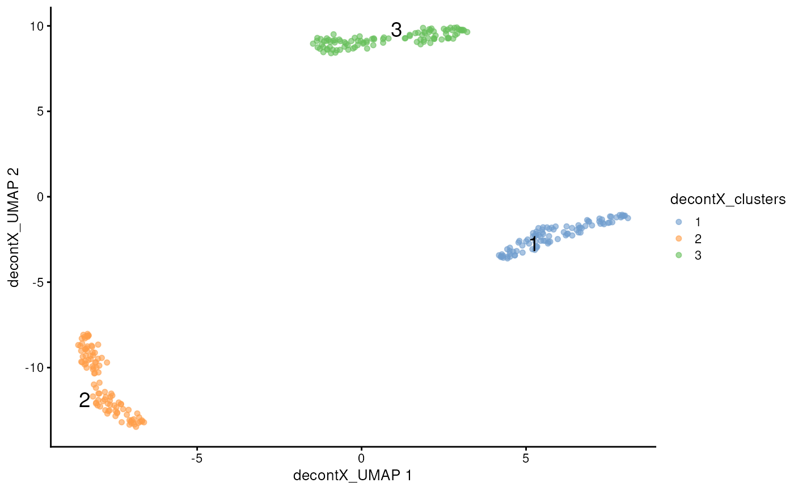
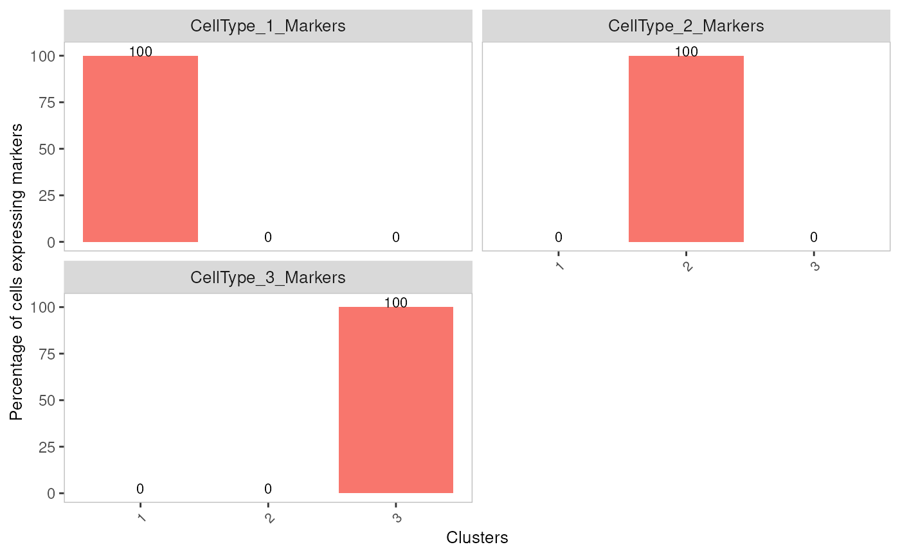

Identifies contamination from factors such as ambient RNA in single cell genomic datasets.
Usage
decontX(x, ...)
# S4 method for class 'SingleCellExperiment'
decontX(
x,
assayName = "counts",
z = NULL,
batch = NULL,
background = NULL,
bgAssayName = NULL,
bgBatch = NULL,
maxIter = 500,
delta = c(10, 10),
estimateDelta = TRUE,
convergence = 0.001,
iterLogLik = 10,
varGenes = 5000,
dbscanEps = 1,
seed = 12345,
legacyInit = FALSE,
logfile = NULL,
verbose = TRUE,
embedding = TRUE,
numThreads = 1
)
# S4 method for class 'ANY'
decontX(
x,
z = NULL,
batch = NULL,
background = NULL,
bgBatch = NULL,
maxIter = 500,
delta = c(10, 10),
estimateDelta = TRUE,
convergence = 0.001,
iterLogLik = 10,
varGenes = 5000,
dbscanEps = 1,
seed = 12345,
legacyInit = FALSE,
logfile = NULL,
verbose = TRUE,
embedding = TRUE,
numThreads = 1
)Arguments
- x
A matrix of counts or a SingleCellExperiment with the matrix located in the assay slot under
assayName. The matrix can be a numeric matrix, a sparse matrix from package Matrix or 'SparseArray', or a DelayedMatrix. Cells in each batch will be subsetted and converted to a sparse matrix of classdgCMatrixfrom package Matrix before analysis. Each batch needs at least 3 cells (15 withlegacyInit = TRUE) for the embedding, or 2 withembedding = FALSE. This object should only contain filtered cells after cell calling. Empty cell barcodes (low expression droplets before cell calling) are not needed to run DecontX.- ...
For the generic, further arguments to pass to each method.
- assayName
Character. Name of the assay to use if
xis a SingleCellExperiment.- z
Numeric, character or factor vector. Cell cluster labels, which the result's
zreturns as a factor of the same labels. If NULL, PCA will be used to reduce the dimensionality of the dataset initially, 'runUmap' from the 'scrapper' package will be used to further reduce the dataset to 2 dimensions and the 'dbscan' function from the 'dbscan' package will be used to identify clusters of broad cell types. If dbscan finds only one cluster, k-means on the PCA components (on all genes withlegacyInit = TRUE) splits the cells into two.zneeds at least two clusters in each batch, unlessbackgroundis supplied: withbackground, one cluster is allowed, which fits only when the cells are a single cell type. Default NULL.- batch
Numeric or character vector. Batch labels for cells. If batch labels are supplied, DecontX is run on cells from each batch separately. Cells run in different channels or assays should be considered different batches. Labels must not be empty strings. Default NULL.
- background
A matrix of counts or a SingleCellExperiment with the matrix located in the assay slot under
assayName. It must be a SingleCellExperiment whenxis one, and otherwise one of the matrix classesxaccepts. It contains the empty droplets instead of cells. When supplied, empirical distribution of transcripts from these empty droplets will be used as the contamination distribution. When both have row names, its rows are matched to the genes ofxby name: genes that aren't inxare dropped, and every gene ofxmust be present. Otherwise the rows are matched by position. Barcodes (column names) that are also inxare removed, within each batch whenbgBatchis given. A warning is given when either has no column names, or when no barcode of a batch matches butbackgroundhas at least a tenth as many droplets as the batch has cells with at least the median cell's total count in the genes ofx, as a raw matrix does when the two name the same barcodes differently. Withbackground,zmay have a single cluster. Default NULL.- bgAssayName
Character. Name of the assay to use if
backgroundis a SingleCellExperiment. Default to same asassayName.- bgBatch
Numeric or character vector. Batch labels for
background, one per column. Its unique values must be the same as those inbatch, such that each batch of cells have their corresponding batch of empty droplets as background, pointed by this parameter: every batch needs at least one droplet, after barcodes that are also inxare removed. Barcodes are matched to the cells of the same batch, so a barcode can be a cell in one batch and an empty droplet in another. Labels must not be empty strings. It needsbatchandbackground. Default to NULL.- maxIter
Integer. Maximum iterations of the EM algorithm. Default 500.
- delta
Numeric Vector of length 2. Concentration parameters for the Dirichlet prior for the contamination in each cell. The first element is the prior for the native counts while the second element is the prior for the contamination counts. These essentially act as pseudocounts for the native and contamination in each cell. If
estimateDelta = TRUE, this is only used to produce a random sample of proportions for an initial value of contamination in each cell. Thenfit_dirichletis used to updatedeltain each iteration. IfestimateDelta = FALSE, thendeltais fixed with these values for the entire inference procedure. Fixingdeltaand setting a high number in the second element will forcedecontXto be more aggressive and estimate higher levels of contamination at the expense of potentially removing native expression. Defaultc(10, 10).- estimateDelta
Boolean. Whether to update
deltaat each iteration.- convergence
Numeric. The EM algorithm will be stopped if the maximum difference in the contamination estimates between the previous and current iterations is less than this. Default 0.001.
- iterLogLik
Integer. Calculate log likelihood every
iterLogLikiteration. Default 10.- varGenes
Integer. The number of variable genes to use in dimensionality reduction before clustering. Variability is calculated using
modelGeneVariancesfrom the 'scrapper' package (or by the variance of the log-normalized counts whenlegacyInit = TRUE). Ifzis provided, it is used only for the UMAP stored in the results, and not at all withembedding = FALSE. Default 5000.- dbscanEps
Numeric. The clustering resolution parameter used in 'dbscan' to estimate broad cell clusters. Used only when z is not provided. Default 1.
- seed
Integer. Seed for reproducibility: the estimation for each batch (including the EM algorithm) is wrapped in with_seed, and the 'scrapper' UMAP used for cell cluster initialization is seeded explicitly. A default value of 12345 is used. If NULL, no seeding is performed and results are not reproducible between runs (only the scrapper UMAP itself, which has fixed internal default seeds, stays deterministic).
- legacyInit
Logical. Use the original scater/scuttle-based initialization (log-normalization and UMAP) to reproduce results from decontX 1.11.0 and earlier. This option requires the 'scater' package and may emit deprecation warnings from scater/scuttle, whose normalization functions were deprecated in favor of the 'scrapper' package. It is kept for backwards compatibility and will remain available as long as the upstream functions are still provided by scater/scuttle. If
zis provided, it is used only for the UMAP stored in the results, and not at all withembedding = FALSE. Default FALSE.- logfile
Character. Messages will be redirected to a file named
logfile. If NULL, messages will be printed to stdout. Default NULL.- verbose
Logical. Whether to print log messages. Default TRUE.
- embedding
Logical. Whether to compute the low-dimensional embedding of the cells (currently a UMAP) that decontX uses to estimate the cell clusters and stores in the results. When
zis provided, the embedding is used only for the stored results, soembedding = FALSEskips it, which saves most of the run time on large data sets; the decontamination is the same either way (except withlegacyInit = TRUEandseed = NULL, where the legacy UMAP draws from the session's random numbers before the EM). Then no UMAP is stored, andplotDecontXContaminationcan plot the contamination on another embedding withreducedDimName.embedding = FALSEneedsz. Default TRUE.- numThreads
Integer. Number of threads for computing the embedding (variable genes, PCA and UMAP). With more than one thread the PCA can differ in the last digits on large data sets, which can move the UMAP coordinates and change estimated clusters, so use the same
numThreadsto reproduce a run. WithlegacyInit = TRUE, only the UMAP uses the threads; it was the same with one and four threads on 8,000 simulated cells. Has no effect withembedding = FALSE. Default 1.
Value
If x is a matrix-like object, a list will be returned
with the following items:
decontXcounts:The decontaminated matrix, a sparse
dgCMatrixwhatever the class ofx, or a DelayedMatrix whenxis one. The DelayedMatrix holds the sparse result in memory, also whenxis on disk (for example anHDF5Matrix); to keep it on disk, save it explicitly, for example withHDF5Array::writeHDF5Array(). Values obtained from the variational inference procedure may be non-integer. However, integer counts can be obtained by rounding, e.g.round(decontXcounts).contamination:The proportion of each cell's counts estimated to be contamination, between 0 and 1.
estimates:List of estimated parameters for each batch, including the UMAP coordinates (
UMAP), which are used to generate the cell cluster labels when z is not supplied.UMAPisNULLwithembedding = FALSE. The columns ofphiandetaare named by cluster label, in the order of the levels of the batch'sz.z:Factor of the cell cluster labels used for analysis. A supplied
zcomes back with its own labels: a factor keeps its level order, without unused levels, and other vectors get sorted levels. Estimated clusters are numbered 1 to K in each batch. Whenbatchis supplied, the labels are prefixed with the batch ("<batch>-<label>") for estimated clusters, and for a suppliedzthat has a label in more than one batch, since the same label may then name different clusters. Prefixed labels are ordered by the batch's first cell, then by label. Thezin each batch'sestimateshas no prefix.runParams:List of arguments used in the function call. Its
batchandbatchBackgroundare the batch of each cell and of each background droplet used for the run. It always hasbatchBackground, which isNULLwhenbackgroundandbgBatchare both NULL.batch:Character vector of the batch of each cell used for the run,
"all_cells"for every cell whenbatchis NULL.
If x is a SingleCellExperiment,
then the decontaminated
counts will be stored as an assay and can be accessed with
decontXcounts(x). The contamination values and cluster labels
will be stored in colData(x). estimates and runParams
will be stored in metadata(x)$decontX. The UMAPs used to generated
cell cluster labels will be stored in
reducedDims slot in x, except with
embedding = FALSE. Each has the columns DecontX_UMAP_1
and DecontX_UMAP_2; with several batches, the cells outside a
batch are NA in its UMAP. Running decontX again on
x replaces the assay, the colData columns and
metadata(x)$decontX. A UMAP from an earlier run
(decontX_UMAP or decontX_<batch>_UMAP) stays in
reducedDims when the new run doesn't replace it, because the
batches differ or the new run has embedding = FALSE, and it
doesn't match the new results. When the counts
are on disk, the decontXcounts assay is held in memory; save the
object with, for example,
HDF5Array::saveHDF5SummarizedExperiment() to keep it on disk.
Examples
# Generate matrix with contamination
s <- simulateContamination(seed = 12345)
library(SingleCellExperiment)
#> Loading required package: SummarizedExperiment
#> Loading required package: MatrixGenerics
#> Loading required package: matrixStats
#>
#> Attaching package: ‘MatrixGenerics’
#> The following objects are masked from ‘package:matrixStats’:
#>
#> colAlls, colAnyNAs, colAnys, colAvgsPerRowSet, colCollapse,
#> colCounts, colCummaxs, colCummins, colCumprods, colCumsums,
#> colDiffs, colIQRDiffs, colIQRs, colLogSumExps, colMadDiffs,
#> colMads, colMaxs, colMeans2, colMedians, colMins, colOrderStats,
#> colProds, colQuantiles, colRanges, colRanks, colSdDiffs, colSds,
#> colSums2, colTabulates, colVarDiffs, colVars, colWeightedMads,
#> colWeightedMeans, colWeightedMedians, colWeightedSds,
#> colWeightedVars, rowAlls, rowAnyNAs, rowAnys, rowAvgsPerColSet,
#> rowCollapse, rowCounts, rowCummaxs, rowCummins, rowCumprods,
#> rowCumsums, rowDiffs, rowIQRDiffs, rowIQRs, rowLogSumExps,
#> rowMadDiffs, rowMads, rowMaxs, rowMeans2, rowMedians, rowMins,
#> rowOrderStats, rowProds, rowQuantiles, rowRanges, rowRanks,
#> rowSdDiffs, rowSds, rowSums2, rowTabulates, rowVarDiffs, rowVars,
#> rowWeightedMads, rowWeightedMeans, rowWeightedMedians,
#> rowWeightedSds, rowWeightedVars
#> Loading required package: GenomicRanges
#> Loading required package: stats4
#> Loading required package: BiocGenerics
#> Loading required package: generics
#>
#> Attaching package: ‘generics’
#> The following objects are masked from ‘package:base’:
#>
#> as.difftime, as.factor, as.ordered, intersect, is.element, setdiff,
#> setequal, union
#>
#> Attaching package: ‘BiocGenerics’
#> The following objects are masked from ‘package:stats’:
#>
#> IQR, mad, sd, var, xtabs
#> The following object is masked from ‘package:utils’:
#>
#> data
#> The following objects are masked from ‘package:base’:
#>
#> Filter, Find, Map, Position, Reduce, anyDuplicated, aperm, append,
#> as.data.frame, basename, cbind, colnames, dirname, do.call,
#> duplicated, eval, evalq, get, grep, grepl, is.unsorted, lapply,
#> mapply, match, mget, order, paste, pmax, pmax.int, pmin, pmin.int,
#> rank, rbind, rownames, sapply, saveRDS, scale, sequence, table,
#> tapply, transform, unique, unsplit, which.max, which.min
#> Loading required package: S4Vectors
#>
#> Attaching package: ‘S4Vectors’
#> The following object is masked from ‘package:utils’:
#>
#> findMatches
#> The following objects are masked from ‘package:base’:
#>
#> I, expand.grid, unname
#> Loading required package: IRanges
#> Loading required package: Seqinfo
#> Loading required package: Biobase
#> Welcome to Bioconductor
#>
#> Vignettes contain introductory material; view with
#> 'browseVignettes()'. To cite Bioconductor, see
#> 'citation("Biobase")', and for packages 'citation("pkgname")'.
#>
#> Attaching package: ‘Biobase’
#> The following object is masked from ‘package:MatrixGenerics’:
#>
#> rowMedians
#> The following objects are masked from ‘package:matrixStats’:
#>
#> anyMissing, rowMedians
library(scater)
#> Loading required package: scuttle
#> Loading required package: ggplot2
sce <- SingleCellExperiment(list(counts = s$observedCounts))
sce <- decontX(sce)
#> --------------------------------------------------
#> Starting DecontX
#> --------------------------------------------------
#> Sat Nov 21 17:42:54 2026 .. Analyzing all cells
#> Sat Nov 21 17:42:54 2026 .... Converting to sparse matrix
#> Sat Nov 21 17:42:54 2026 .... Generating UMAP and estimating cell types
#> Sat Nov 21 17:42:55 2026 .... Estimating contamination
#> Sat Nov 21 17:42:55 2026 ...... Completed iteration: 9 | converge: 0.0009154
#> Sat Nov 21 17:42:55 2026 .. Calculating final decontaminated matrix
#> --------------------------------------------------
#> Completed DecontX. Total time: 0.3082068 secs
#> --------------------------------------------------
# Plot contamination on UMAP
plotDecontXContamination(sce)
 # Plot decontX cluster labels on the UMAP
plotReducedDim(sce, dimred = "decontX_UMAP",
colour_by = "decontX_clusters",
text_by = "decontX_clusters")
# Plot decontX cluster labels on the UMAP
plotReducedDim(sce, dimred = "decontX_UMAP",
colour_by = "decontX_clusters",
text_by = "decontX_clusters")

# Plot percentage of marker genes detected
# in each cell cluster before decontamination
s$markers
#> $CellType_1_Markers
#> [1] "Gene_47" "Gene_32" "Gene_86"
#>
#> $CellType_2_Markers
#> [1] "Gene_70" "Gene_33" "Gene_48"
#>
#> $CellType_3_Markers
#> [1] "Gene_74" "Gene_26" "Gene_20"
#>
plotDecontXMarkerPercentage(sce, markers = s$markers, assayName = "counts")
 # Plot percentage of marker genes detected
# in each cell cluster after contamination
plotDecontXMarkerPercentage(sce, markers = s$markers,
assayName = "decontXcounts")
# Plot percentage of marker genes detected
# in each cell cluster after contamination
plotDecontXMarkerPercentage(sce, markers = s$markers,
assayName = "decontXcounts")

# Plot percentage of marker genes detected in each cell
# comparing original and decontaminated counts side-by-side
plotDecontXMarkerPercentage(sce, markers = s$markers,
assayName = c("counts", "decontXcounts"))
 # Plot raw counts of indiviual markers genes before
# and after decontamination
plotDecontXMarkerExpression(sce, unlist(s$markers))
# Plot raw counts of indiviual markers genes before
# and after decontamination
plotDecontXMarkerExpression(sce, unlist(s$markers))